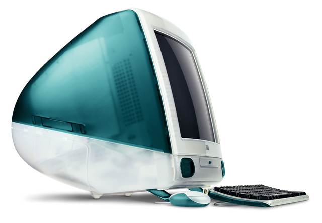

và những cống hiến của ông cho ngành Khoa Học Máy Tính
Imac
 Hình 15: Máy tính Imac
Imac là một thế hệ được thừa kế từ Macintosh,đây là máy tính để bàn được thiết kế và xây dựng bởi Apple Inc. Nó đã là một sản phẩm chính trong mảng máy tính để bàn của Apple máy tính để bàn tiêu dùng của Apple kể từ khi ra mắt vào tháng Tám năm 1998 và đã phát triển qua sáu thế hệ khác nhau. Đây cũng là sản phẩm đánh dấu sự quay trở lại với Apple của Steve Jobs nơi ông đã sáng lập nên. Imac đầu tiên có hình dáng khác xa với ngày nay, Imac G3 có hình dạng quả trứng, với một màn hình CRT, với lớp vỏ bên ngoài được làm bằng nhựa mờ, là một thiết kế khá hấp dẫn và đẹp mắt ở thời điểm bấy giờ. Ở phiên hai bản kế tiếp, Imac G4 và G5, nhìn chung thiết kế vẫn giữ theo lối cũ và không có sự đột phá. Tuy nhiên đến với các phiên bản tiếp theo thì lại có những bước đột phát trong thiết kế. Tất cả các thành phần của thiết bị được đặt ngay phía sau màn hình, tạo ra một thiết kế thống nhất mỏng mà nghiêng dựa trên đế kim loại phía sau. Sau rất nhiều thay đổi và cải tiến, Imac của Apple ngày đay được đánh giá là một trong những máy tính để bàn ấn tượng và đẹp nhất. Imac chính là sản phẩm thành công đánh dấu sự trở lại ngoại mục của Steve Jobs, khi ông đã tạo ra được một dòng sản phẩm máy tính để bàn với thiết kế tuyệt đẹp và tính năng cực tốt phù hợp với nhu cầu của người dùng nên sản phẩm này đã phát triển đến ngày nay và vẫn tiếp tục phát triển. Imac là sản phẩm đáng mơ ước của mọi gia đình.